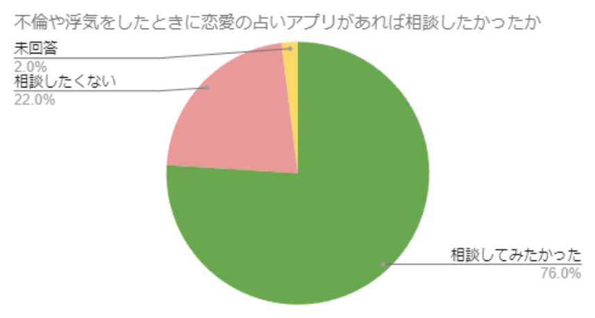

【浮気・復縁・不倫…】 結婚ラッシュに乗り遅れた私に降り注いだ地獄と救済の糸口
「今焦らなくてもそのうち結婚できるでしょ」
「恋人とは仲がいいし自分に限って浮気なんてされるわけがない」
まずこのような考えを持っている方は非常に危険な状態であることを自覚してください。
私自身も少し前まで似たような甘い考えを持っていました。
その結果地獄を味わうことになったんです。
みなさんには私と同じような経験をしてほしくないので、
ここからは私自身が味わった”地獄”と
参考になる”恋愛の事実”についてご紹介します。
私が体験してきた地獄
私が味わった地獄は、単刀直入に言えば二度の浮気を経験してきたという過去です。
このような地獄を経験してきた理由は明確で、
「いつか結婚できる…」
「浮気なんてされるわけがない…」
と思い込んでいたからなんです。
しかも周りで結婚ラッシュが起こり始めても焦らず、
結婚適齢期を過ぎようとしていた矢先に立て続けに起こった出来事でした。
「死にたい」
２回目の浮気を経験した直後は人間不信になり、こう思ってしまったときもありました。
闇の中で見えた光
２回目に浮気をされた相手とはそのまま別れてしまいました。
しかし
１回目に浮気をされた相手とは違いどうしても諦めきれなかった私は、
復縁したいと考えていたんです。
職場の同僚に相談するとオススメされたのは、
当時全く信じていなかった"アレ"でした（笑）
怖い、こんなにも当たるなんて…
そう、私が利用したのは"占い"アプリ。
ここでたかが占いだと思って私と同じ苦しみを味わいたい方は、
画面を閉じていただいて構いません。
隠れて恋愛占いに頼る人が急増中
まず
最近になって恋愛で占いに頼り始める人は急増しています。
実際に20歳以上の男女に向けて行ったアンケートでは、
約3人に1人が占いアプリを使用したことがあるというデータがあるんです。
私が最初に相談した同僚も過去に一度既婚男性と関係を持ってしまった事について相談していました。
今回相談した先生にも興味本位で聞いてみると、知り合いには言えない復縁や不倫といったドロドロとした恋愛事情を抱えている人からの相談が特に多いそう。
また、占いでしかもアプリだと場所を選ばず匿名性もかなり高いのも相談のしやすさに繋がっているみたい。
私も利用したときは、
「どのタイミングで復縁したい相手に再アタックしたらよいか」
「どのようなアプローチがよいか」
などなど…
かなり細かい部分までアドバイスしてくれるので、
迷わず行動に移すことができました。
そんな私が今回利用したのはウラーノというアプリ。
心の裏に潜む、誰にも明かせない恋の苦しみ
ここからは衝撃の事実が書いてあるので、真実を知りたくない方は見ないことをオススメします。
↓
↓
↓
↓
↓
↓
↓
下のグラフは、20歳以上の男女を対象に不倫や浮気に関するデータをまとめたものです。

これを見ると、過去に不倫や浮気を1度でも「したことがある」と答えた人は43%とかなり高い数字。
その中でも当時恋愛に強い占いアプリがあれば「相談してみたかった」と答えた人は76%もいることが分かります。
上記のデータでも分かる通り、誰も口にしないだけで裏では意外と不倫や浮気をしていて、
その悩みを誰かに打ち明けたいと思っているんです。
もし仮に
今この文章を読んでいて、人には言えないような恋愛の悩みを抱えている方は、
取り返しがつかなくなる前に一度このアプリを利用してみてください。
ウラーノをオススメできる理由
ここからは、私が利用したウラーノをオススメできる理由についてご説明します。
①恋愛に関する占いには特に強い

ウラーノは特に恋愛に強い先生が多く、
よく聞くタロット占いから珍しい占いまで多種多様な種類の占いを受けることができます。
占ってくれる先生自身も私のように過去に恋愛で苦しんだ経験がある先生もいて、とても親身になって話を聞いて理解してくれました。
➁男女間の複雑な問題でも占ってくれる
今回、私が占ってもらったのは彼との復縁に関してでした。
しかし
中身を見ていくと、復縁以外にも「不倫、片思い、相手との性の悩み」
さらに結婚相手とは別のセカンドパートナーに関することまで、
恋愛に関する悩みなら何でも相談できるみたいなんです！
➂チャット形式だから気軽に相談できる
私は復縁のことだったので先輩に困っていることを話すことができましたが、
中には人に気軽に話せないようなことも多いと思います。
ですが、知り合いにはなかなか相談しにくい悩みでもウラーノなら
24時間いつでもチャットで相談できるから、家の中で誰にもばれずに解決方法を見つけることができるんです。
安心して利用できる理由
「でもやっぱり中身を見るまで心配…」
このように私も最後まで少し疑っていました。
ですがウラーノは過去の実績もあり、
累計で利用しているユーザーは”20万人”
在籍している先生の数は”700人以上”という情報まで公開していて、
安心して使えるアプリなんだなという印象を受けました！

「実際にアプリの中身を見てみたい」
そう思ったあなたのために、今回は実際にアプリ内を操作している画面を動画でお見せします！
他の利用者からも感謝の声
口コミを見てみると、私以外にも実際に占ってもらった人からの高評価や感謝のレビューが多く見られました！

最後に
私のように年を重ねてからの恋愛で悩みがある方へ、
”まだ諦めるのは早い”ということだけお伝えしたいです。
諦めるくらいなら一度相談してみませんか？

幸せになる権利は誰にでも平等にあります
今、恋愛関係で人には話せない悩みを抱えているあなたには是非ウラーノをオススメするので
この機会にぜひ一度利用してみてほしいです！